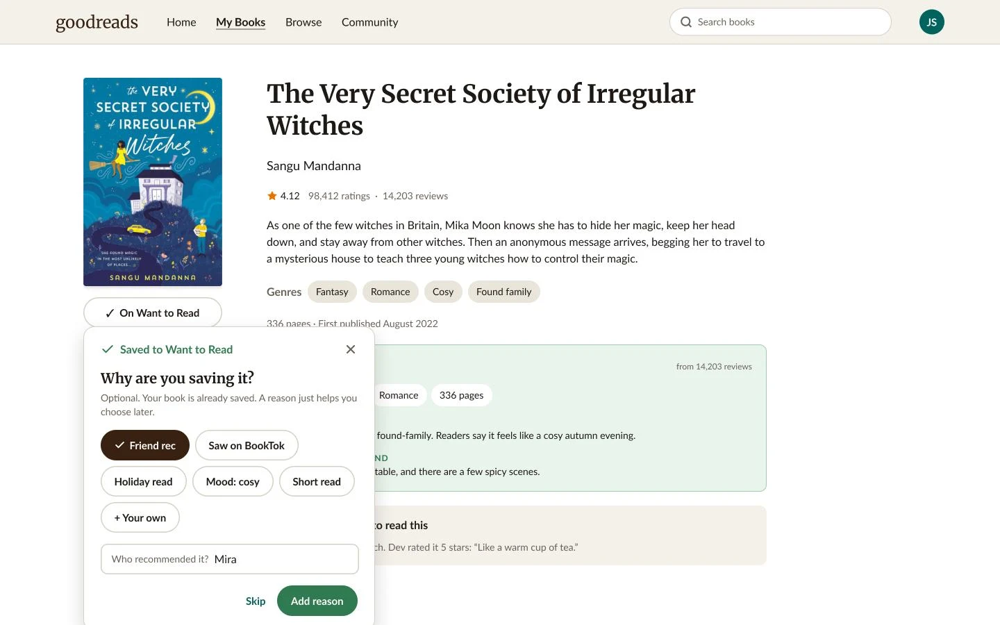

Remember the reason.
A saved title loses the context that made it interesting. Preserve the friend’s recommendation, the source or the reading intention.
DV2008 · Individual case study · 2026
From saved
to started.
Helping readers choose their next book from the list they already have.

01 / THE CHALLENGE
Saving a book is easy.
Choosing one is where
readers get stuck.
Our starting point was Goodreads. We explored how people discover, evaluate and organise books before deciding which part of the experience to improve.
The research shifted our attention to what happens after a book is saved: the original recommendation gets lost, the list keeps growing, and readers still need help deciding.
Narrow to Now connects three tasks: remember why you saved a book, narrow your list, and decide whether a pick is right for you.
02 / A1 — UNDERSTAND
We investigated real reading habits before proposing a feature.
Our methods combined a survey, interviews, observed Goodreads use, an interface audit and background research.
Participants included new, lapsed, rare and frequent Goodreads users. The sample helped us identify patterns, rather than estimate all readers’ behaviour.
A1 survey, n = 41. Multiple selections allowed.
Goodreads became like a storage place instead of helping me choose.
P3 · A1 interview, quoted in the A3 presentation
A saved title loses the context that made it interesting. Preserve the friend’s recommendation, the source or the reading intention.
A long list gives readers more things to scroll through. Help them narrow it to a manageable shortlist.
An average rating does not explain whether a book suits someone right now. Show mood, length and review trade-offs beside the choice.
03 / A2 → A3 — DECIDE & REFINE
Keep the original motivation visible.
Narrow the books already on the list.
Judge the fit before committing.
From 12 ideas scored in two rounds, the team combined A + C + K. Idea A scored 11/12 and K scored 12/12. Progress documented in A3, slides 3 and 7. Open the A2 Figma file ↗
THE SCOPE DECISION
Readers were already saving in several places. Adding another collection mechanism would not solve the difficulty of choosing from what they had.
We left cross-platform capture outside A3’s scope and kept the useful part: a “Saved because” label that carries the original context through the experience.
A feature choice should be traceable to a user need.
REFINEMENT 01
In A2, the reason prompt interrupted saving. In A3, the book saves on the first tap and adding a reason is optional.
The main task must work for someone who skips the extra step.

REFINEMENT 02
Recommendations use reader tags such as mood, pace and length. Saved reasons add context, but are not required for a book to appear.
REFINEMENT 03
One reason label follows the book, questions arrive one at a time, and every decision offers Start reading, Not now or Remove.
04 / THE FINAL EXPERIENCE
Explore the six steps. These are screens from our prototype.
Tap Want to Read to save the book. Add an optional reason such as a friend’s recommendation or BookTok, or skip and keep going.
Adding context should support the task, not block it.
THREE WAYS TO FINISH
Moves to Currently Reading.
Want to Read drops from 43 to 42.
Hides the book from picks for 30 days.
It stays on the saved list.
Takes the book off Want to Read.
The list reflects the decision.
Show the closest books and help the reader adjust their answers.
Show both, with guidance on how to see more.
Point to changing answers or returning to the full list.
Make the missing context explicit and allow a reason to be added later.
05 / A3 — TEST & LEARN
Five readers. The same cosy, short-read task. Two experiences.
Method Remote, moderated think-aloud on Zoom.
Participants Five readers, aged 20–23, with mixed Goodreads experience.
Tasks Choose on the baseline, choose with Narrow to Now, save a recommendation, and respond when none of the picks fit.
MEDIAN TIME TO CHOOSE
60 seconds less at the median.
Compared with 3/5 on the baseline.
| Measure | Baseline | Narrow to Now |
|---|---|---|
| Choice within 3 minutes | 3 / 5 | 5 / 5 |
| Median time to choose | 148 seconds | 88 seconds |
| Confidence · average, 1–5 | 2.8 | 4.0 |
| Ease · average, 1–7 | 3.8 | 5.8 |
| Added a reason when saving | Not applicable | 3 / 5 |
A useful direction, with limits. This was one round with five readers, not a population-level result. Familiarity and task order may affect the comparison. The next refinements still need another test.
06 / MY TAKEAWAYS AS TEAM LEADER
Keeping the scope focused is easier when we can connect each feature decision to the research. Removing Save from Anywhere needed a clear explanation of why choosing mattered more for this project.
An optional feature cannot become a hidden requirement. The experience still needs to help readers who never add a reason.
A good recommendation is only part of the journey. Moving the book to Currently Reading makes the user’s choice visible and gives the flow a clear result.
For me, the leadership lesson is to keep the team’s decisions connected: the research explains the scope, the scope guides the flow, and testing informs the next change.
07 / EXPLORE THE PROTOTYPE
Try saving a book, choosing your preferences, and moving a pick to Currently Reading. The prototype is designed for desktop; use the full-screen Figma link for the clearest view.
PROJECT MATERIALS